# Outline of the class - Week 1: Machine Learning reminders - Week 2: Multilayer Perceptron and Backpropagation - Week 3: Convolutional Neural Networks - Week 4: Recurrent Neural Networks and NLP 1 - Week 5: Recurrent Neural Networks and NLP 2 - Week 6: (Unsupervised Generative Neural Networks) </br> or Deep Learning Challenge Support --- # How this course works ### Lecture ~1h30 ### Coding sessions ~3h ### Project: Deep Learning challenge,</br>released at week 3 - Work by pairs for labs - Evaluation on labs and project Recommended reading: [deeplearningbook.org](http://www.deeplearningbook.org/) --- class: center, middle # Machine Learning reminders Guillaume Ligner - Côme Arvis .center[ <img src="images/ece_logo.png" style="width: 300px;" /> ] --- # What is Machine Learning? <br/> ###.center[“A computer program is said to learn from experience **$E$** with respect to some class of tasks **$T$** and performance measure **$P$**, if its performance at tasks in **$T$**, as measured by **$P$**, improves with experience **$E$**.”] > -- <cite>Tom Mitchell</cite> --- # The Task $T$ - Usually tasks that are too difficult to solve with fixed programs written -- - Complex tasks examples: - Learning a robot how to walk - Autonomous cars -- - Most common task types: - Classification - Regression - Transcription - Machine translation - Denoising - ... --- # The Performance $P$ - Basically a quantitative measure of the performance of a machine learning algorithm -- - Usually, it is specific to a given task **$T$** and the desired behavior of a system -- - Examples: - Accuracy, Brier score, F1 score and AUC for classification tasks - MSE, MAE for regression tasks - ... -- - We frequently build custom metrics to suit design choices that depend on the application -- - Always evaluate these performance measures on a **test set** of data --- # The Experience $E$ - In general, machine learning algorithms are allowed to experience an entire **dataset** -- - Three main different experience types: - Unsupervised learning algorithms experience datasets containing **features** only -- - Supervised learning algorithms experience datasets containing features with a **label** or **target** -- - Reinforcement learning algorithms experience an **environment** -- - We usually describe a dataset with a **design matrix**, which contain a different multi-dimensional example in each row --- # Unsupervised learning - Usually the task is to find the "best" **representation** of the data - In many cases we are looking to preserve **as much information** from $X$ as possible while obtaining a **simpler** and more accessible representation of $X$ .center[ 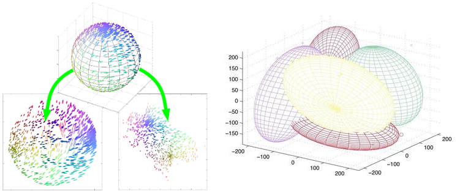 ] .left-column50.small[ - t-SNE dimension reduction example ] .right-column50.small[ - Multivariate gaussian mixture model clustering example ] --- # Supervised learning: classification tasks .center[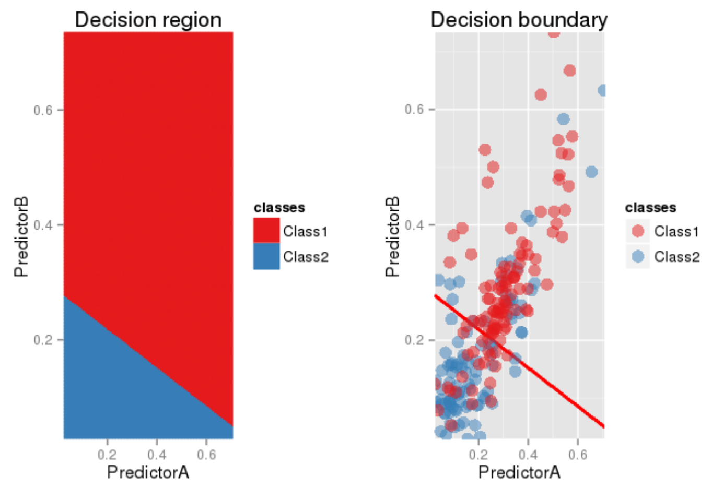] - A **classification task** aims to predict which class a data point is part of - In this case, the target value is **discrete** and belongs to a **finite number** of values - Some classification algorithms: logistic regression, perceptron, decision tree, KNN, SVM, **neural networks**, ... --- # Supervised learning: regression tasks .center[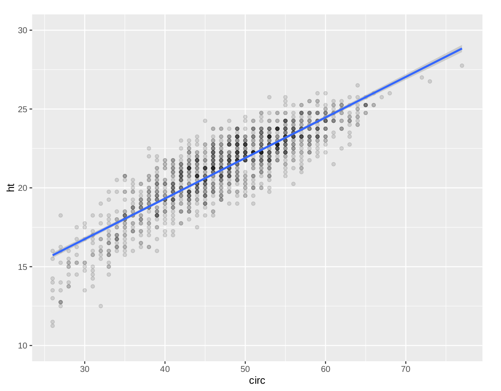] - A **regression task** aims to associate a real-valued prediction for each data point - Some regression algorithms: linear regression, decision tree, SVR, **neural networks**, ... --- # Machine learning: often a non-linear problem - Possible solution: find a **non-linear transformation** of the features and apply a **linear decision** in the new projected space .center[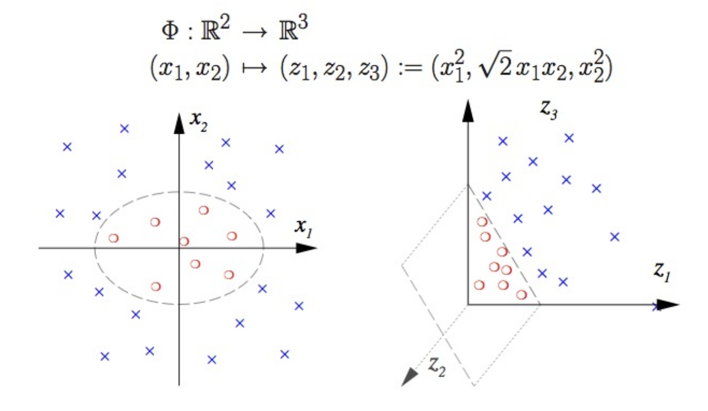] --- # Machine learning: often a non-linear problem - Other solution: design an algorithm that can intrinsically deal with non-linear interactions .center[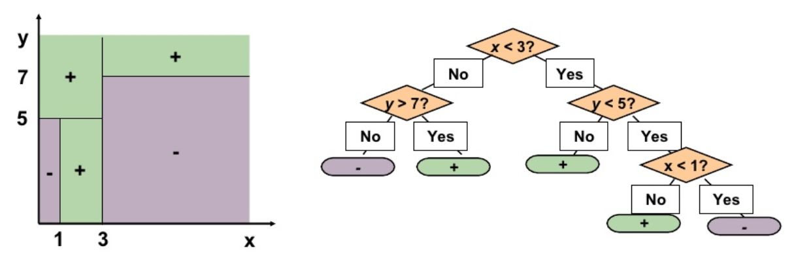] .center[Decision tree algorithm as example] --- # Linear Regression - Suppose we have a target $y \in \mathbb{R}$ and a feature sample $\mathbf{x} \in \mathbb{R}^p$, suspiciously linearly dependant - Now let $\mathbf{\omega} \in \mathbb{R}^p$ our parameters vector and $\sigma^2 > 0$ the variance fixed to some constant, then we can make the following assumption: .center[ $p(y | \mathbf{x} ; \mathbf{\omega}, \sigma) = \mathcal{N}(y ; \mathbf{\omega}^\top \mathbf{x}, \sigma^2) = \frac{1}{\sqrt{2 \pi \sigma^2}} \exp{(-\frac{(y - \langle {\mathbf{x}, \mathbf{\omega}} \rangle) ^2}{2 \sigma^2})}$ ] --- # Linear Regression - Let $\mathcal{D} = ${$ (\mathbf{x}_1, y_1), \dotsc, (\mathbf{x}_n, y_n)$} be a training set of i.i.d variables<br/><br/> - We have: $p(y_1, \dotsc, y_n | \mathbf{x}_1, \dotsc, \mathbf{x}_n ; \mathbf{\omega}) = \prod_1^n p(y_i | \mathbf{x}_i ; \mathbf{\omega})$ - Maximize this conditional distribution is equivalent to minimizing the following negative log-likelihood: .center[$- \sum_1^n \log p(y_i | \mathbf{x}_i ; \mathbf{\omega}, \sigma) = - \sum_1^n \log \mathcal{N}(y_i ; \mathbf{\omega}^\top \mathbf{x}_i, \sigma^2)$<br/>$ = n \log \sigma + \frac{n}{2} \log(2 \pi) + \frac{1}{2} \sum_1^n \frac{(y_i - \langle {\mathbf{x}_i, \mathbf{\omega}} \rangle) ^2}{\sigma^2}$]<br/><br/> - It naturally leads to the MSE minimization with respect to $\mathbf{\omega}$: .center[find $\hat{\mathbf{\omega}} = \underset{\mathbf{\omega}}{\operatorname{argmin}} \frac{1}{2n} \sum_1^n (y_i - \langle {\mathbf{x}_i, \mathbf{\omega}} \rangle) ^2$] --- # Linear Regression Compact and closed forms: - We denote $\mathbf{X} \in \mathbb{R}^{n \times p}$ our training design matrix, and $\mathbf{y} \in \mathbb{R}^n$ our target vector - The minimization problem over $\mathbf{\omega}$ can be rewritten as: .center[find $\hat{\mathbf{\omega}} = \underset{\mathbf{\omega}}{\operatorname{argmin}} \frac{1}{2n} || \mathbf{y} - \mathbf{X} \mathbf{\omega} ||_2 ^2 = \underset{\mathbf{\omega}}{\operatorname{argmin}} J(\omega)$] with $J$ being our loss function we want to minimize - $\nabla J(\omega) = 0 \Leftrightarrow \frac{1}{n} \mathbf{X}^\top (\mathbf{X} \hat{\omega} - \mathbf{y}) = 0 \Leftrightarrow \hat{\omega} = (\mathbf{X}^\top \mathbf{X})^{-1} \mathbf{X}^\top \mathbf{y}$ The last equation is known as the **normal equation** - Problem: too expensive to compute if $n$ and $p$ are large - Usually we prefer an iterative approach: the **gradient descent** --- # Gradient descent - Iterative algorithm using the information from the gradient of the loss function to make a step - For step $t$, make a step forward the negative gradient:<br/> .center[$\mathbf{\omega}^{t+1} := \mathbf{\omega}^{t} - \epsilon \nabla_\mathbf{\omega} J(\mathbf{\omega})$] .center[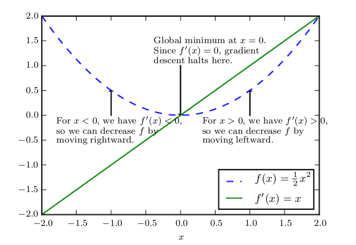 ] <sub><sup>.center.small[Unidimensional example of how the gradient descent uses the derivatives to reach to a minimum] --- # Gradient descent .center[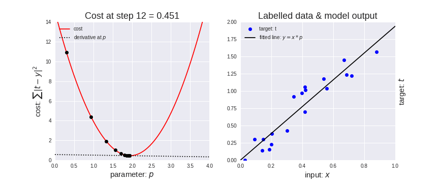 ] <sub><sup>.center.small[Left : visualization of the loss function during the optimization of the parameter p] .center.small[Right : visualization of the linear predictions $x \cdot p$ fitting the target $t$] --- # Fitting the signal or fitting the noise - In the real world, machine learning is **not only** an optimization problem - Often, we collect noisy data:<br/> measurement errors, outliers, extra randomness, ... - We want to capture the **underlying phenomenon** by being robust to the noise .center[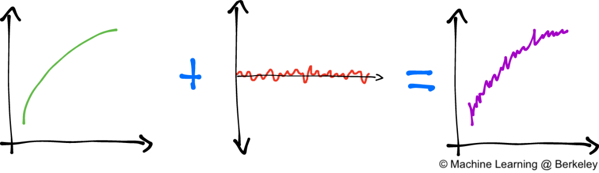 ] <sub><sup>.center.small[We would like to retrieve the underlying phenomenon from the noisy data] --- # Overfitting and penalization - Modifying the loss the include a **penalization term**, here the penalization $L2$, or **ridge** penalization:<br/> .center[$J(\mathbf{\omega}) = MSE_{train} + \lambda || \mathbf{\theta} ||^2_2$] .center[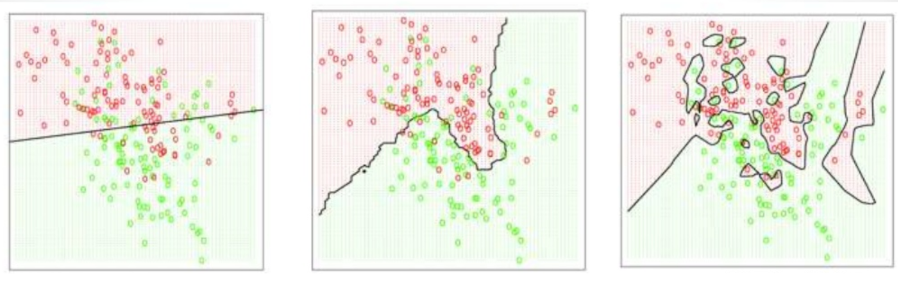 ] | Underfitting | Right fitting | Overfitting | | ------------- | ------------- | ------------- | | Excessive $\lambda$ | Appropriate $\lambda$ | $\lambda \to 0$ | | High bias | Optimal bias-variance tradeoff | High variance | | Model too simple | Optimal model capacity | Model too complex | <sub><sup>Left: underfitting case with an excessive $\lambda$ value. The learned function does not have the sufficient **capacity**<br/> Center: underfitting case with an excessive $\lambda$ value. The learned function does not have the sufficient **capacity**<br/> Right: overfitting case with $\lambda \to 0$ . The learned function does not have the sufficient **capacity** --- # Bias-variance tradeoff Bias-variance error decomposition:<br/> .center[ $MSE\_{train} = \mathbb{E}[(\hat{\mathbf{\theta}}\_{train} - \mathbf{\theta})^2] = Bias(\hat{\mathbf{\theta}}\_{train})^2 + Var(\hat{\mathbf{\theta}}\_{train})$ $ = (\mathbb{E}[\hat{\mathbf{\theta}}\_{train}] - \mathbf{\theta})^2 + Var(\hat{\mathbf{\theta}}\_{train})$ ] .center[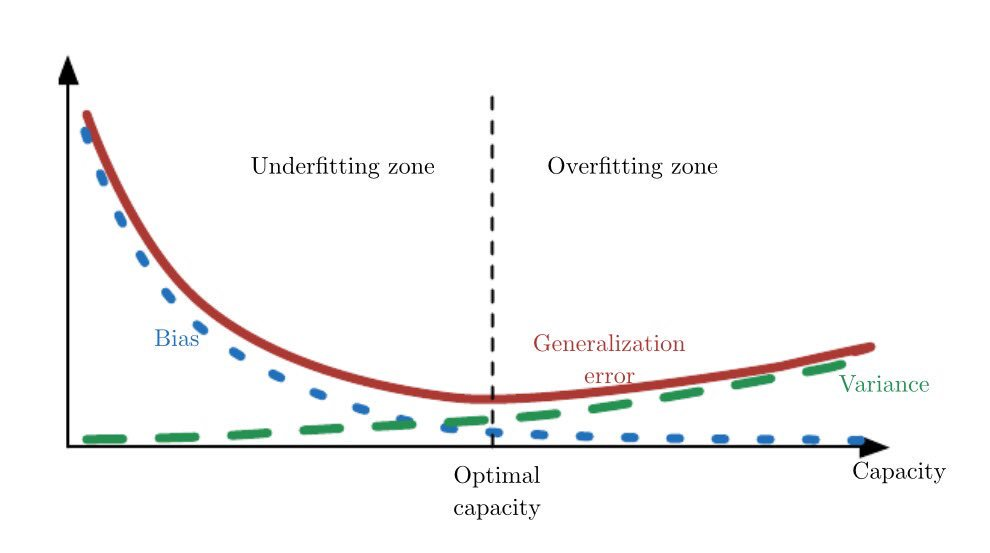 ] --- # Cross-validation - **K-fold cross-validation** allows us to evaluate the **generalization error** of our model - Pick a **random partition** $I_1, \ldots, I_K$ of {$1, \ldots, n$}, with $n$ the total number of samples, where $|I_k| \approx \frac{n}{K}$ for any $k = 1, \ldots, K$ - For example, with $K=10$ : .center[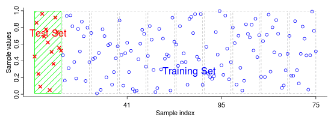 ] <sub><sup>.center.small[We evaluate the model error $K$ times on the test sets, then we average them as our global generalization error] --- # Logistic Regression ### As a classification model .center[<img src="images/sigmoid.png" style="width: 300px;" />] - Traditional model in binary classification : prediction either $0$ or $1$ - $\sigma(x) = \frac{1}{1 + \exp(-x)}$, used to approximate $P(y=1|x)$ : - <sub>Good mathematical properties : $\sigma(x) : \mathbb{R} \mapsto ]0,1[$ [//]: # (example of comment here) - $prediction = \begin{cases} 1 & \quad \text{if } P(y=1|x) \geq 0.5\\\\ 0 & \quad \text{if } P(y=1|x) < 0.5 \end{cases}$ --- # Logistic Regression ### As a classification model - Logistic Regression based on $\sigma(x)$ : - <sub> $\sigma(x) = \frac{1}{1 + \exp(-x)} = \frac{\exp(x)}{1 + \exp(x)}$ - <sub>$\sigma(x)^{\prime} = \sigma(x)(1-\sigma(x))$ - <sub> In practice, $\mathbf{x}$ not described by $1$ dimension but $m$ dimensions. - <sub> $P(y=1|\mathbf{x})$ modelized by $h_\theta(\mathbf{x})$ $= h(\mathbf{x};\theta)$ $= \sigma(\mathbf{\theta}^T.\mathbf{x})$ $= \frac{1}{1 + \exp(-\mathbf{\theta}^T.\mathbf{x})}$ with $\mathbf{x} \in \mathbb{R}^m$, the vector of features and $\mathbf{\theta} \in \mathbb{R}^m$ the vector of parameters - <sub>Usually for binary classification with log-likelihood loss - <sub>$L(x) = -\frac{1}{n}\sum_{i=1}^{n}y_i\cdot\log(\sigma(\theta^T.\mathbf{x_i})) + (1-y_i)\cdot\log(1-\sigma(\theta^T.\mathbf{x_i}))$ --- # Logistic Regression ### As a classification model .small70[ - Useful to modelize probabilities about physical world phenomena - Not linear in a way that if a probability is already very strong or very low, it needs a big increment from the input to make it stronger or lower - Like many physical world phenomena : physical performance with respect to training, happiness sensation with respect to wealth.. - Logistic Regression belongs to Generalized Linear Model type. Why ? - Sigmoid function is not linear but Logistic Regression model boundary decision function is linear. What does that mean ? .center[ $prediction = \begin{cases} 1 \text{ if } P(y=1|\mathbf{x}) \geq 0.5\\\\ 0 \text{ if } P(y=1|\mathbf{x}) < 0.5 \end{cases}$ $\Leftrightarrow$ $ \begin{cases} 1 \text{ if } \mathbf{\theta}^T.\mathbf{x} \geq 0\\\\ 0 \text{ if } \mathbf{\theta}^T.\mathbf{x} < 0 \end{cases}$ ] - Separation between $1$s and $0$s predicted samples is the plane $\theta^T.\mathbf{x} = 0$ ] --- # Logistic Regression ### As the activation of an artificial neuron -- .left-column70.small[ - Weighted sum of numerical features as input of an activation function which output range is $\sqsupset0,1\sqsubset$ [//]: # ($\sqsupset0,1\sqsubset$) ] -- .right-column30.small[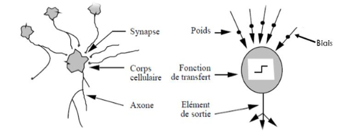 - Mathematical imitation of a neuron receiving neurotransmeters leading to excitatory/inhibitory state ] -- .-column70.small[ - Output signal is $\sigma(\beta_1\cdot x_1 + \dotsc + \beta_n\cdot x_n + bias) \mapsto \sqsupset0,1\sqsubset$ ] -- .left-column70.small[<img src="images/artificial_neuron.gif" style="width: 430px;" />] --- # Goal and outline of the Deep Learning class -- - Understand what Deep Learning is -- - <sub>How and why it works - <sub>When to use it and when not to - <sub>Have a broad understanding of its applications -- <br> <br> <br> - Practical matters -- - <sub>Learn how to implement neurals nets with different frameworks - <sub>Manipulate low level concepts such as backpropagation of the gradient --- # What is Deep Learning ? -- - #### Non-linear, hierarchical, abstract representations of data -- - #### Very flexible models to find pattern from any input to output size - __Universal Approximation Theorem__: -- > <sub>"A feedforward network with a single layer is sufficient to represent any function, but the layer may be infeasibly large and may fail to learn and generalize correctly"</sub> > > <sub>-- <cite>Ian Goodfellow</cite></sub> -- - #### Differentiable functions, it leads to gradient based optimization --- # Deep Learning - why now ? -- - Traditional Machine Learning's weakness : -- - <sub>Numerical features to built can be counterintuitive for a human - <sub>Therefore difficult to modelize them -- .center[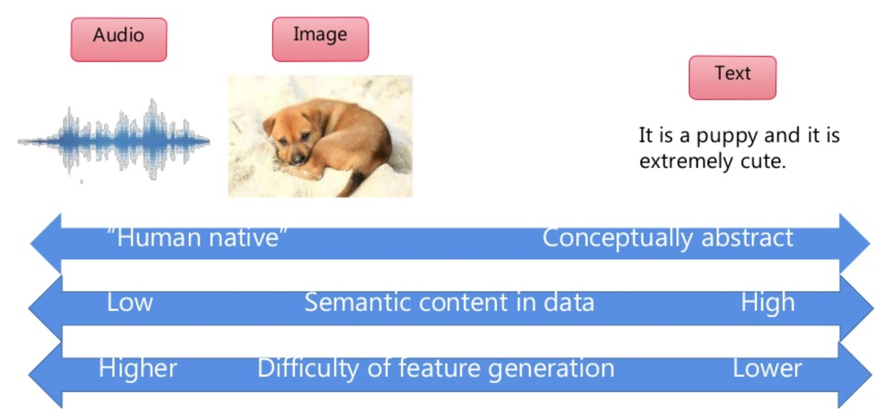] - Quelques exemples : tâches liées aux signaux __audio__, computer __vision__, Natural __Language__ Processing --- # ML versus DL - Machine Learning - <sub>A human worker thinks of smart features "relevant for the prediction" - <sub>The ML algorithm finds a general pattern from input to output, with respect to the cost function used and the training data sampled - .grey[Deep Learning] - <sub>.grey[Combines the inputs from layer to layer such that final representation of input data is linear] .center[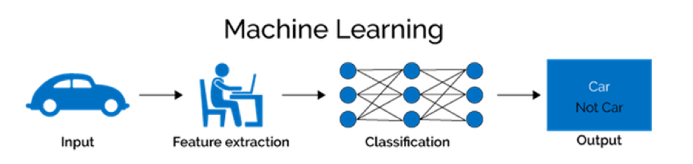] --- # ML versus DL - .grey[Machine Learning] - <sub><sup>.grey[A human worker thinks of smart features "relevant for the prediction"]<sub><sup> - <sub><sup>.grey[The ML algorithm finds a general pattern from input to output, with respect to the cost function used and the training data sampled]<sub><sup> - Deep Learning - <sub>Combines the inputs from layer to layer such that final representation of input data is linear .center[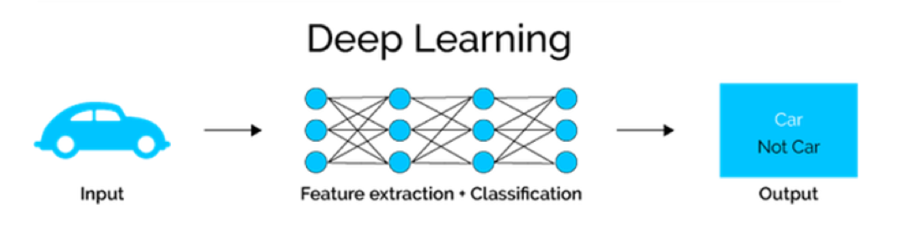] --- # ML versus DL - .grey[Machine Learning] - <sub><sup>.grey[A human worker thinks of smart features "relevant for the prediction"]<sub><sup> - <sub><sup>.grey[The ML algorithm finds a general pattern from input to ouput, with respect to the cost function used and the training data sampled]<sub><sup> - Deep Learning - <sub>Combines the inputs from layer to layer such that final representation of input data is linear .center[] .small90[ - classification : usually logistic regression comes last on final features</br> - regression : usually linear regression comes last on final features ] --- # Libraries & Frameworks <br></br> .center[<img src="images/frameworks.png" style="width: 700px;" /><br/><br/>] --- # Computation Graph - A Neural Networks is a function itself - A very deeply nested function: .small80[ - $f(x) = g[f_1(x), \dotsc, f_n(x)]$ - $f_1(x) = h_1[k_1(x), \dotsc, k_n(x)], \dotsc, f_n(x) = h_n[l_1(x), \dotsc, l_n(x)]$ - $k_1(x) = \dotsc $ and so on ] .right-column40.small[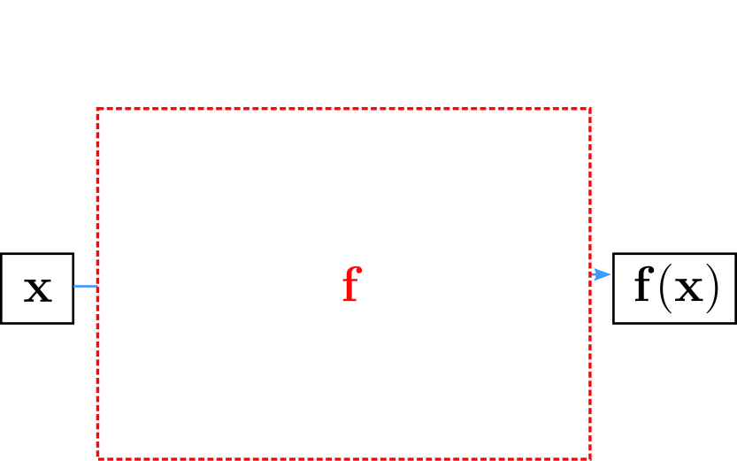] .left-column60.small[ - Goal : - Unfold $f$ and into "elementary" blocks: - activations functions: sigmoid, tanh, reLU, etc. - matrix products - element-wise sums and products ] --- # Computation Graph - Why ? - To vizualize the architecture of your network - To compute the gradient and perform any gradient-based optimization of the parameters and the loss - <sub>We have $\frac{\mathrm d output}{\mathrm d input}$, the derivative of the output with respect to the input, for all elementary blocks - <sub>We can use the __chain rule__ (see next course) to get the derivative of the final output of the network with respect to any parameter - <sub>Not matter how far nested in the network parameters are <br> <br> - Let's see an example of a simple function's computation graph --- # Computation Graph - A simple example <br> <br> <br> .center[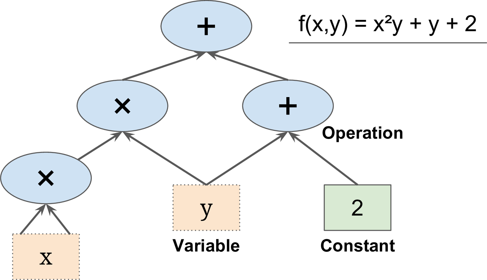<br/><br/>] --- # Computation Graph - A Deep Learning example - Computation graph of the loss of the Neural Net, with $l_2$ regularization .center[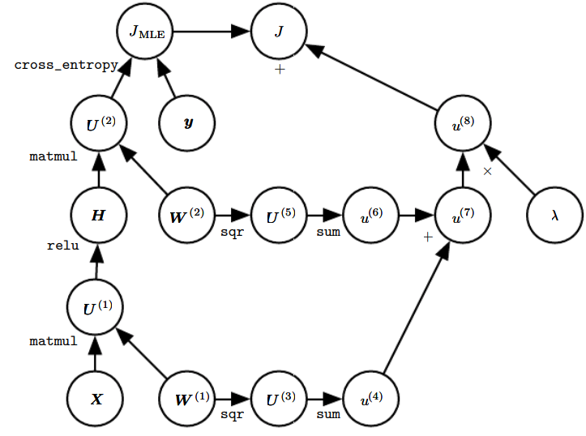] --- # Computation Graph .left-column70.small[ - A Tensorflow example - <sub>Computation graph of the output and loss of the Neural Net - <sub>Here nodes are units of computation - <sub>Edges are the data as input or output by a computation unit - <sub>Can see connection with gradient computing and update of the parameters ] .right-column30.small[<img src="images/computation_graph_tf.gif" style="width: 250px;" />]